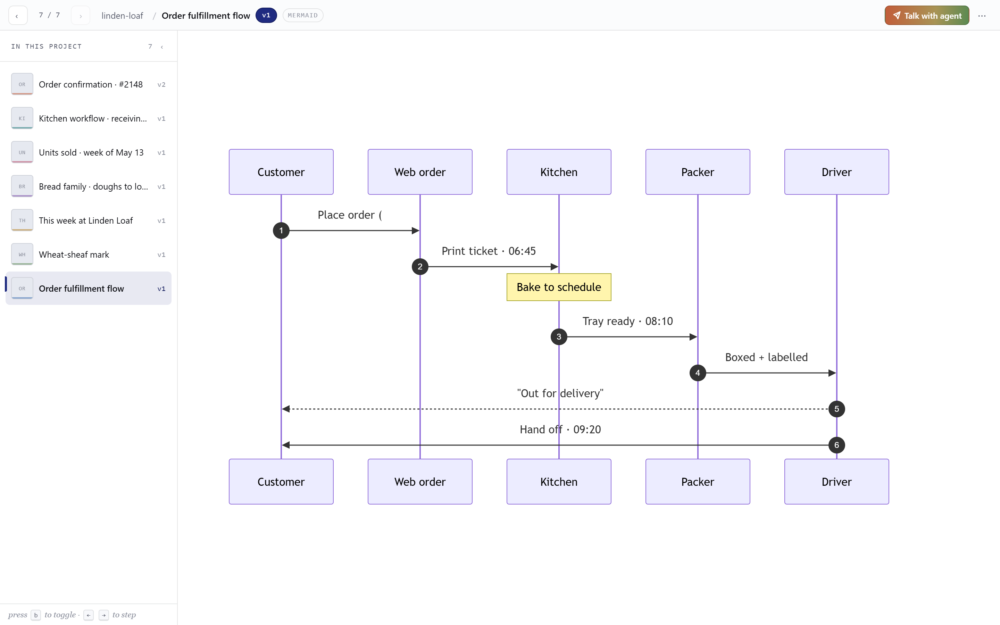
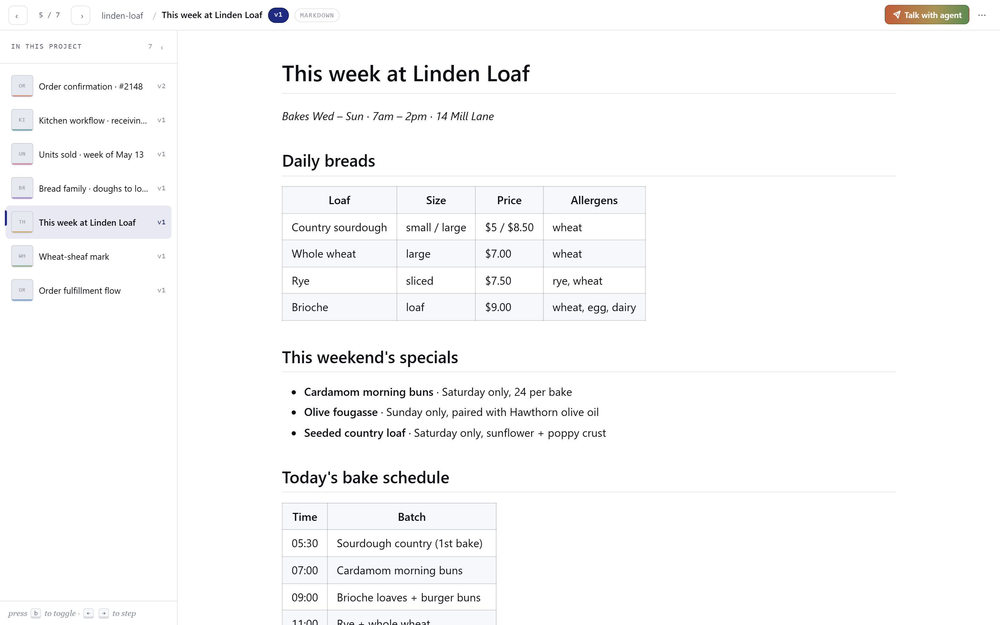
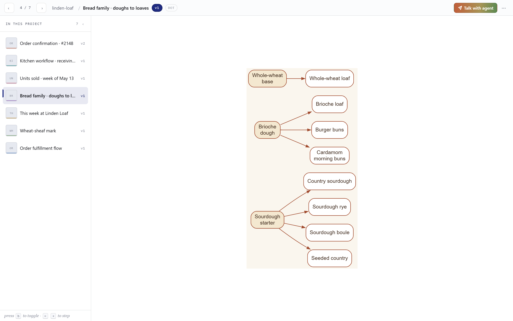
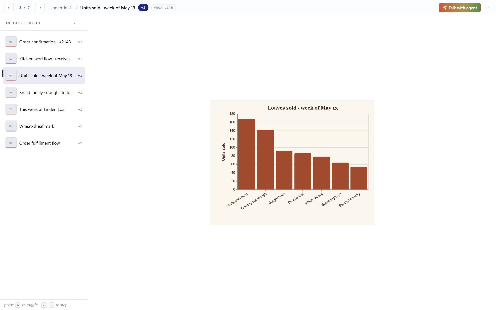
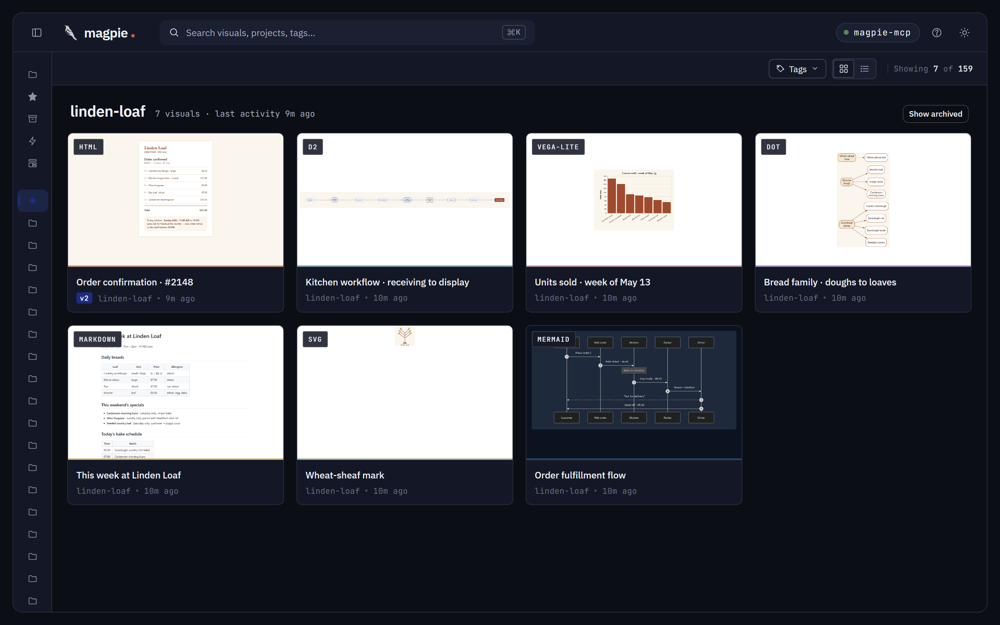
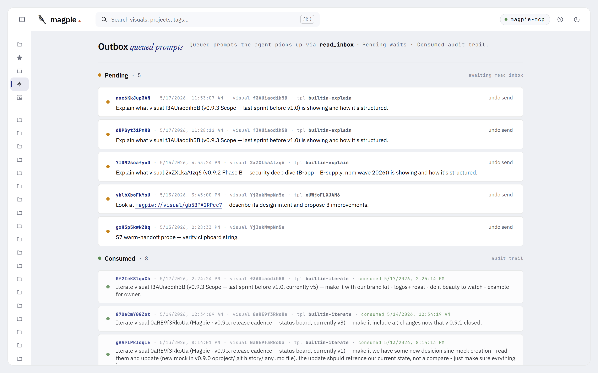
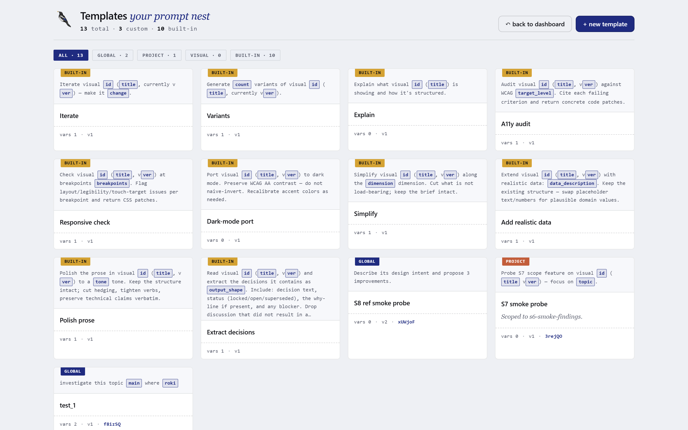
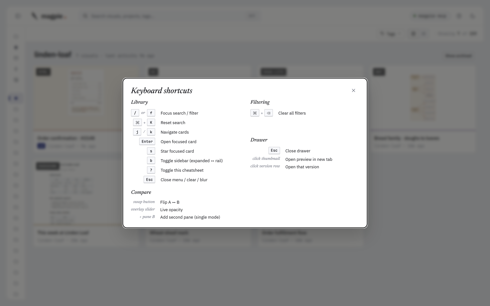

Your loyal Magpie.
Lands every visual in the nest.
Magpie is a local nest for every visual your AI hands you — mockups, diagrams, charts, status reports, plans. Library, projects, tags, versions, side-by-side compare. One Node process, your browser, your disk. No cloud. No accounts.
$ npx magpie-mcp


00Three actors
You're the reader they all serve.

trainer
Master
Teaches your AI Magpie's rules.
A portable skill bundled in the npm tarball. Decides which project a visual belongs to, when to iterate vs add, when to ask before filing. No code, no storage — pure judgment.

trained bird
Magpie
Tends the nest, version after version.
Your AI with the Master loaded. Brings visuals to the Nest, arranges them by project, keeps versions in order, asks before adding when uncertain.

dumb infra
Nest
Local. Quiet. Yours.
One SQLite file. One blobs folder. Lives at ~/.magpie/ on your disk. Holds what your Magpie brings. No LLM. No telemetry.
Master trains·Magpie tends·Nest keeps.
01Install & wire to your host
Two listeners boot from one command: stdio (for your AI host) and HTTP (for your browser).
- Boot the server. Run
npx magpie-mcpin a terminal. It prints a dashboard URL likehttp://127.0.0.1:3737. Open that in your browser. If 3737 is taken, it auto-bumps. - Install the Master skill. Run
npx magpie-mcp --install-skill. Drops the skill into your host's skill directory (auto-detected for Claude Code · Claude Desktop). Your AI now knows the protocol. - Get the MCP config snippet. In another terminal:
npx magpie-mcp --print-config. It prints both Claude Code and Claude Desktop forms. - Paste into your host. Use the tab below that matches your client. Restart the host to load the server.
- Ask your AI to mock something. Try "Mock a settings page" or "Sketch the auth flow as a diagram." The visual lands in the dashboard within a second.
MCP config snippet
{
"mcpServers": {
"magpie": {
"type": "stdio",
"command": "npx",
"args": ["-y", "magpie-mcp"]
}
}
}Drop this in .mcp.json at your repo root, or your Claude Code config.
{
"mcpServers": {
"magpie": {
"command": "npx",
"args": ["-y", "magpie-mcp"]
}
}
}Add to claude_desktop_config.json. macOS path: ~/Library/Application Support/Claude/. Restart Claude Desktop.
MAGPIE_HOME=/path to pin storage to a custom directory. Default is ~/.magpie/. Backup is copying that folder. See §13 Backup.
--install-skill ships to Claude Code + Claude Desktop today; Cursor + Cline detection arrives in v1.1.
02How it works
One process, two surfaces. Your AI commands via stdio. You watch via the browser. No LLM lives in the server.
Storage
Single SQLite file at ~/.magpie/magpie.db for metadata. Blobs at blobs/<id>/v<n>.<ext>. Migrations are forward-only.
Renderers
Mermaid bundled offline; Markdown via marked + DOMPurify; DOT via graphviz-wasm; Vega-Lite via vega SSR; D2 via wasm. PNG thumbs via puppeteer-core.
No network
Offline-capable. Vega-Lite specs must carry inline data ("data": {"values": ...}). Zero telemetry, zero accounts.
03Seven supported formats
Your AI picks a format that fits the request. Magpie renders + thumbnails each one. All offline. All side-by-side comparable.

HTML html
.html · sandboxed iframeUI mockups, dashboards, landing pages. Rendered in a sandboxed iframe (no allow-same-origin).

Mermaid mermaid
.mmd · bundled v11Flowcharts, sequence, state, ER, gantt. Rendered offline — no CDN.

SVG svg
.svg · directIcons, logos, single vector elements. Served as image/svg+xml.

Markdown md
.md · marked + DOMPurifyProse, READMEs, design notes. Code blocks syntax-highlighted (highlight.js).

Graphviz / DOT dot
.dot · graphviz-wasmDirected and undirected graphs. digraph / graph source.

Vega-Lite vega-lite
.vl.json · vega SSRCharts, data viz. JSON spec with inline data (no remote fetches).

D2 d2
.d2 · @terrastruct/d2 (wasm)Modern diagram-as-code. Clean syntax, good for system maps.
plantuml · excalidraw
offline + pure-JS ruleJVM dep / canvas-heavy — break the offline rule. Not on the roadmap.
04The dashboard
Three regions: sidebar (filters), grid (your visuals), drawer (the selected one). View-only — entity creation goes through MCP.
Sidebar filters
- Library — All / Starred / Archived counts.
- Projects — flat list with visual counts. Click to filter.
- Tags — every tag in the library, sorted by use. Click multiple → AND.
- Type — filter by format (html, mermaid, svg, …).
- Source — which generator made it (Stitch, Figma, Mermaid Chart, etc.).
Search
Top bar search (or / to focus, ⌘K to reset) matches title, project, and tag. Filters from the sidebar still apply on top.
Empty state · seed scaffold
Brand-new install? The empty-state CTA loads a 7-visual seed bundle (one per format — a fictional bakery called Linden Loaf) so you have something to browse while you wire up your AI host. Dismissible · idempotent · doesn't run twice.
Dark mode

05Compare versions
When your AI iterates a visual, every version sticks. Pick any two and view them side-by-side.
Shell states
The unified shell decides what to render based on the picker selection:
URL-driven: /v/<id> for single, /compare/<id>?a=N&b=M&mode=sxs for compare. Bookmark a specific compare; reload preserves picker + mode.
06Iterate & revert
Each refinement creates a new version. Old versions never disappear.
- Ask your AI to tweak a visual ("make it dark", "remove the sidebar"). It calls
iterate(visual_id, content, message?, description?). - The new version becomes current.
v(N-1)stays accessible. - From the drawer, click any version to preview it. Click Revert to v{n} to make an older version current.
- Reverting doesn't delete history — it changes which version the thumbnail and default preview point at.
content_path instead of inline content. Same result; saves tokens. Path must live under your project root. Magpie never moves, edits, or deletes the source — it reads + copies.
07Talk with agent
Three ways to hand a visual back to your AI — push it to the outbox, design a reusable template, or fire a slash command in your host. Same goal: get the bird flying with context already loaded.
Pillar 1
Outbox
Push a templated prompt to a server-managed queue. Your AI picks it up via the magpie://inbox resource or the read_inbox MCP tool. Async — your AI doesn't have to be running yet.
Pillar 2
Templates
Design a prompt once with named variables and visual references. Use it from the dashboard, scope it to a project, share it across versions. 10 built-ins ship; create your own.
Pillar 3
MCP Prompts
Same templates surface as slash commands in your AI host (e.g. /magpie:iterate in Claude Code). User-fired — host invokes, your AI receives the resolved prompt.

magpie://visual/<id> reference travels with the prompt. Your AI reads the visual via the MCP resource — same trust boundary as any other MCP call.
08The Outbox
A two-lane Kanban for queued prompts: Pending on top, Consumed below. Your AI reads from Pending and moves entries to Consumed when picked up.

How entries arrive
- Drawer → Talk with agent → pick a template → Queue to Outbox.
- Templates UI → Compose → fill vars → Send.
- HTTP
POST /api/inboxwith{visual_id, template_id, prompt_body, vars}.
How your AI consumes
- Reads the
magpie://inboxMCP resource for the full pending JSON. - Or calls the
read_inboxtool to pull a batch with a soft consume. - Each entry has the resolved
prompt_body, the template id, and the visual reference.
Lifecycle
- Pending — entry just added. WS event
inbox.addednotifies the dashboard. - Consumed — your AI marked it consumed. WS event
inbox.consumed. Stays visible for audit. - Deleted — you removed it. 5-second undo banner; WS event
inbox.deleted.
09Templates
Reusable prompts with typed variables and visual references. 10 built-ins ship with Magpie; build your own with the same shape. Templates also surface as slash commands in MCP-aware hosts.

The 10 built-ins
Iterate
Draft the next version with a specific change.
Variants
Three options exploring the same intent.
Explain
Walk through decisions in plain language.
A11y audit
WCAG findings — not a rewrite.
Responsive check
Desktop ⇿ mobile parity pass.
Dark mode port
Light theme over to dark, tokens preserved.
Simplify
Cut to the essential moves.
Add data
Real values in place of lorem.
Polish prose
Tighten copy on a markdown deliverable.
Extract decisions
Pull decisions out of a status report.
Built-ins are global — they apply to every project and visual. Cannot be edited or deleted; clone first to customize.
Variables
Every template body is a Mustache-style string with named vars. Magpie resolves them against the selected visual:
Auto-resolved (always available)
{{id}}· the visual id{{title}}· current title{{project}}· project name{{type}}· format (html, mermaid, …){{ver}}· current version number
User-typed (per template)
- string · single-line text input
- multiline · textarea
- enum · dropdown with locked options
Max 5 user vars per template. Each can be required + have a default + a label.
Scope
User templates can be scoped:
- Global — appears everywhere. Default for new user templates.
- Project — only shows when the selected visual lives in that project. Use for project-specific verbs.
- Visual — only shows for one specific visual. Use for a recurring iteration loop on one artifact.
Built-ins are always global — the store rejects scope on builtin rows.
Visual references
Each template can carry up to 3 visual references — pinned visual ids (optionally version-pinned) that get resolved into the prompt as additional magpie://visual/<id> chips. Use them when an iteration always needs context from the same companion piece — e.g., "compare against the locked design spec".
MCP Prompts — same templates, host-fired
Magpie exposes its templates as MCP Prompts. In Claude Code, type /magpie: and the slash menu surfaces them: /magpie:iterate, /magpie:variants, /magpie:explain, /magpie:a11y_audit, /magpie:responsive_check, /magpie:dark_mode_port, /magpie:simplify, /magpie:add_data.
The host resolves the slash, asks for any required vars, and fires the prompt to your AI as the next turn. No clipboard, no Outbox roundtrip — direct invocation. Built-ins ship today; user templates surface in MCP Prompts in v1.1.
10Keyboard shortcuts
Press ? from any dashboard view to see them all.

11MCP tool surface
Your AI has 14 tools and 3 resources. You don't call them directly — you ask in plain English, and the Master skill picks the right tool.
Phase 1 · Create & list
5 toolsadd_visual auto-creates).Phase 2 · Find & update
5 toolsPhase 3 · Archive & inbox
4 toolsMCP resources
magpie://library
Read-only catalogue of all visuals.
magpie://project/<name>
Just one project's visuals.
magpie://visual/<id>[/v<n>]
One specific visual, current or pinned version.
12Export
Take any visual offline. Three single-file forms plus a project zip.
png · raster
PNG raster
The rendered thumbnail at full size. Lossy on diagrams; cheap on bandwidth.
svg · vector
SVG vector
For vector formats — mermaid, svg, dot, vega-lite, d2. Crisp at any size.
source
Original source
The original .html / .mmd / .svg / .md / .dot / .vl.json / .d2 file.
zip · project
Project zip
Every visual in a project, latest version, with a manifest.
Find these on the drawer ("Download") or via dashboard project menu ("Export project").
13Backup & restore
Two ways to back up. Both produce a single artifact you can store wherever you store everything else.
The folder copy
Everything Magpie holds is at ~/.magpie/ (or wherever MAGPIE_HOME points). Quit Magpie, copy the folder, you're done.
The CLI
$ npx magpie-mcp --backup
→ wrote magpie-backup-2026-05-19.tar.gz (12.4 MB)Writes a USTAR + gzip archive. Zero new dependencies. Internally runs a WAL checkpoint first so the snapshot is consistent.
Restore
Extract the archive into ~/.magpie/ (or your MAGPIE_HOME), reboot Magpie. Migrations are forward-only — restoring an older snapshot replays missing migrations on next boot. There is no rollback path by design; downgrade = restore from an older backup.
14FAQ & not-goals
Where is my data?
~/.magpie/ on your machine. SQLite metadata + filesystem blobs. Nothing leaves the host. Override with MAGPIE_HOME=/path.
What is the Master skill, exactly?
A portable Agent Skill — a markdown file with frontmatter that teaches your AI Magpie's protocol. Ships in the npm tarball at skill/magpie-master/SKILL.md. npx magpie-mcp --install-skill drops it into your host's skill directory (Claude Code · Claude Desktop today). The MCP server itself also carries a layered fallback string so untrained hosts still work — the skill is the high-resolution version.
Does Magpie generate visuals?
No. Your AI writes the content; Magpie organizes, renders, versions, and serves it. There is no LLM in the server.
Can I use it without Claude?
Yes — any MCP-aware host works (Claude Code, Claude Desktop, Cursor, Cline, custom clients). The dashboard alone is also useful as a viewer for content you produce by hand: drop files into the HTTP API directly.
Multiple browsers / multiple machines?
The dashboard binds to 127.0.0.1 by default — local only. To share, change MAGPIE_BIND. For multi-machine, copy ~/.magpie/ (or the backup archive); there's no sync.
What about migrations and breaking changes?
Migrations are forward-only forever (R21). The runner detects gaps and downgrades at boot. The downgrade path is restore-from-backup — see §13 Backup.
Does Magpie touch my source files?
No. content_path is read + copy only — bytes go from your named path into the next blob slot. The origin is left exactly where it was. Magpie never moves, edits, or deletes your source.
I ran npx magpie-mcp in two folders — why two HTTP ports?
Magpie runs one canonical process per MAGPIE_HOME. Subsequent npx magpie-mcp invocations in the same home become facades that multiplex MCP traffic to the existing canonical over a named pipe — they bind zero HTTP ports.
You see two ports only when you have two different MAGPIE_HOME values. Each home gets its own lock, IPC pipe, and HTTP listener. Example: repo A pins MAGPIE_HOME=./.tmp-home in its .mcp.json and gets canonical A on :3737; repo B with no override falls back to ~/.magpie/ and gets canonical B on :3738 (auto-bumped because :3737 was taken).
The facade log line connected as facade to canonical pid=N http=:M is informational — it tells you where the canonical's dashboard lives, not that the facade opened a port.
To merge into one canonical (one port): set the same MAGPIE_HOME in both shells before running npx magpie-mcp. To kill a stale canonical: read the pid from $MAGPIE_HOME/magpie.lock and terminate it.
Browser support
Chrome / Chromium-based browsers only at v1.0. The render pipeline uses system Chrome via puppeteer-core, and the dashboard targets the same surface. Firefox + Safari are deferred indefinitely.
Things Magpie will not do
- Run an LLM. The server is dumb infra.
- Cloud sync, share links, public gallery.
- Auto-tag with AI.
- Multi-user accounts.
- Ship as Electron / Tauri. Bundled web only.